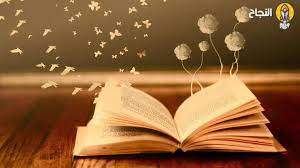

رابعاً : القراءة
القراءة مفتاح العالم، تفتح أبواب المعرفة وتغذي الخيال. من خلال الكتب، نكتسب رؤى جديدة ونستمتع بعوالم متعددة دون مغادرة مكاننا
الجدول الذي سوضح الامور اكثر
| النوع | الوصف | الموارد |
|---|---|---|
| القراءة الأدبية | تركز على الأعمال الأدبية مثل الروايات، القصص القصيرة، والشعر. تعزز هذه القراءة من الخيال وتنمية الإبداع | كتب : روايات، مجموعات شعرية، قصص قصيرة |
| القراءة العلمية | تشمل الكتب والمقالات العلمية التي تتناول مواضيع متخصصة في مجالات مثل العلوم الطبيعية، التكنولوجيا، والرياضيات | كتب : كتب أكاديمية ومرجعيات |
| القراءة التاريخية | تركز على دراسة الأحداث التاريخية، السير الذاتية، والكتب التي تقدم تحليلاً للحقب الزمنية المختلفة | كتب : كتب تاريخية وسير ذاتية |
| القراءة الترفيهية | تهدف إلى التسلية والترفيه من خلال قراءة كتب لا تركز على التعليم أو المعلومات العلمية | كتب : روايات، كتب خفيفة، كوميكس |
| القراءة العملية | تتناول كتباً ومواد تهدف إلى تعليم مهارات محددة، مثل كتب التنمية الذاتية، كتب الطهي، أو الأدلة الإرشادية | كتب : كتب تعليمية، أدلة، كتيبات |
| القراءة الأكاديمية | تتضمن مواد دراسية مثل المقررات الجامعية والأبحاث الأكاديمية التي تركز على المعرفة التخصصية والمفاهيم النظرية | كتب : كتب دراسية ومراجع أكاديمية |
| القراءة الثقافية | القراءة الثقافية تركز على فهم وتقدير ثقافات مختلفة من خلال الكتب والمقالات التي تستعرض العادات، التقاليد، والأديان واللغات | كتب : كتب تناول الثقافات والتقاليد مثل : الأنثروبولوجيا الثقافية و ثقافات العالم |
| القراءة النفسية | القراءة النفسية تشمل الكتب والمقالات التي تتناول مواضيع متعلقة بالصحة النفسية، علم النفس، والتنمية الشخصية | كتب: كتب في علم النفس والتطوير الذاتي مثل "فكر تصبح غنياً" لنابليون هيل و"العقلية" لكارول دويك |